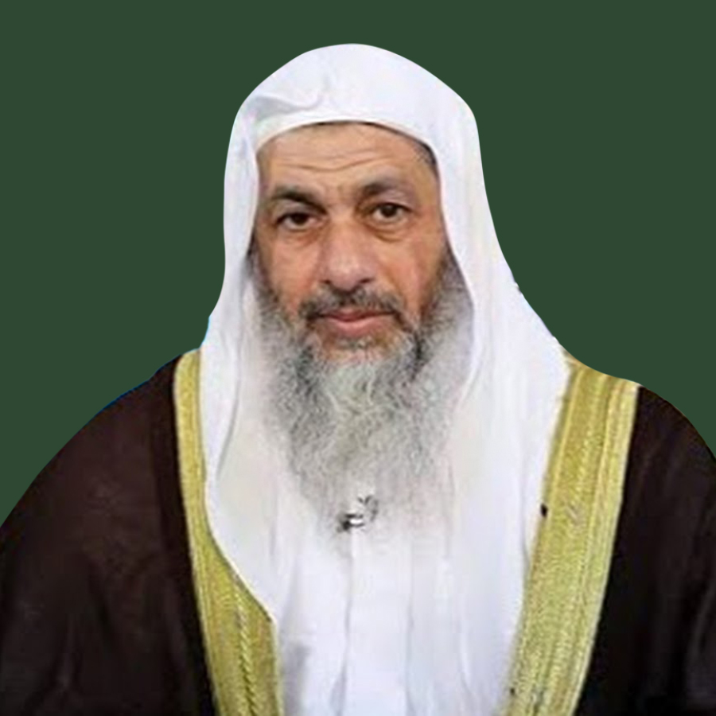

التفسير > مدرسو المقرر
مدرسو المقرر

الشيخ مصطفى العدوي
أستاذ وعالم في العلم الشرعي
مصطفى العدوي من مواليد قرية منية سمنود التابعة لمحافظة الدقهلية، أتم حفظ القرآن وهو في المرحلة الثانوية على يد مشايخ قريته، ثم تدرج في مراحل التعليم النظامية حتى تخرج.
يدرس العقيدة
الشيخ مصطفى العدوي
أستاذ وعالم في العلم الشرعي
مصطفى العدوي من مواليد قرية منية سمنود التابعة لمحافظة الدقهلية، أتم حفظ القرآن وهو في المرحلة الثانوية على يد مشايخ قريته، ثم تدرج في مراحل التعليم النظامية حتى تخرج.